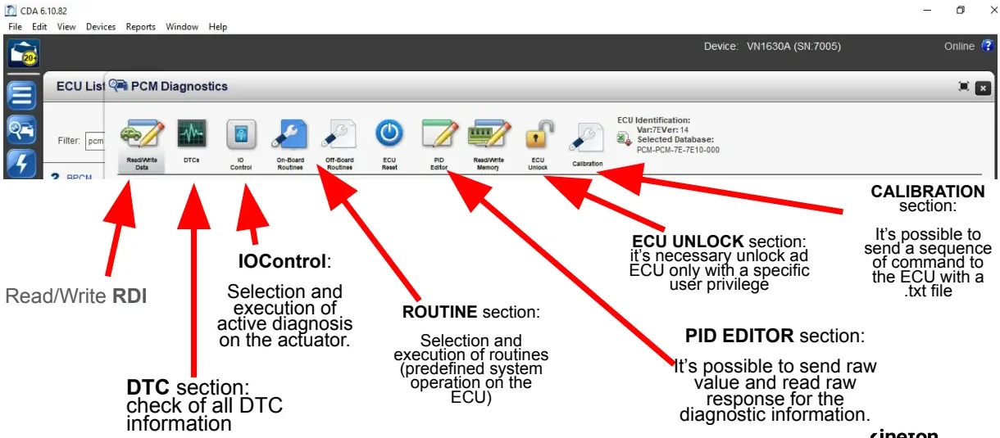
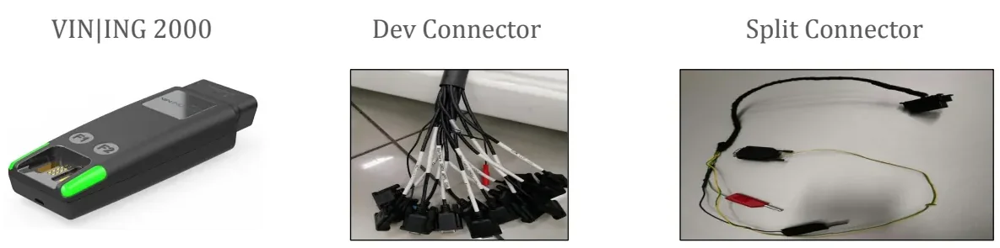
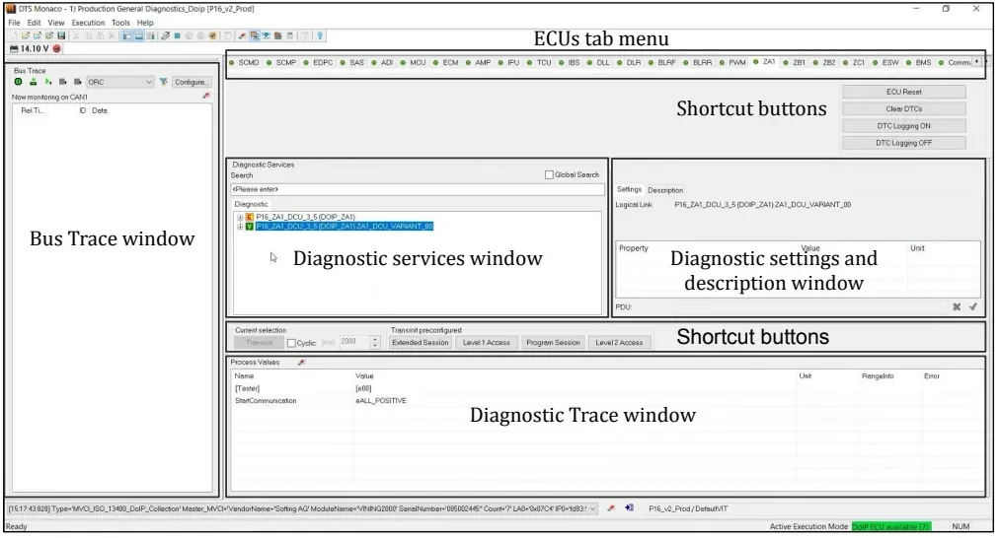

Diagnostic Tools: DIAnalyzer, CDA & DTS Monaco¶
The Diagnosis lessons covered the theory of ECU (Electronic Control Unit — one of the small computers inside the vehicle) diagnostics and the UDS (Unified Diagnostic Services) protocol behind it. This article covers the tools that put that theory into practice: the off-board diagnostic testers, the PC applications used at the bench and in the vehicle to communicate with ECUs. It explains how to connect a tester to a vehicle, read and clear fault codes, read live parameters, drive actuators, and flash ECU software.
A diagnostic tester sends UDS requests through a hardware interface called a VCI (Vehicle Communication Interface) — the box that bridges your laptop and the vehicle buses — and turns the raw hex exchanges into readable fault codes, parameters and guided procedures.
Three tools are covered here, one per lesson deck:
- DIAnalyzer — the diagnostic application used by FCA (Fiat Chrysler Automobiles, now part of Stellantis), current version 4.x
- CDA (Chrysler Diagnostic Application) — the Chrysler equivalent, nearly identical in functionality to DIAnalyzer
- DTS Monaco — Softing's engineering diagnostic tool, used across the whole vehicle lifecycle from ECU testing to vehicle release
All three share the same basic architecture, so the concepts learned with one transfer to the others. A PC application connects to a VCI, the VCI connects to the vehicle buses, and the tester speaks UDS to whichever ECU you select.
flowchart LR
PC["PC running<br/>diagnostic tool"] --> VCI
subgraph VCI["VCI (hardware interface)"]
direction TB
H1["CANcaseXL /<br/>VN1630A /<br/>VIN|ING 2000"]
end
VCI --> BUS["Vehicle buses<br/>CAN / CAN FD /<br/>K-Line / Ethernet (DoIP)"]
BUS --> ECU1["ECU 1"]
BUS --> ECU2["ECU 2"]
BUS --> ECU3["ECU n"]What every diagnostic tester can do¶
Regardless of the brand, a diagnostic tester exposes the same families of functions, and each one maps directly onto a UDS service — so you already know the theory behind every button you will click.
| Function | What it does | UDS service behind it |
|---|---|---|
| ECU identification | Reads SW/HW numbers, serial, spare part number | ReadDataByIdentifier (0x22) |
| DTC management | Reads and clears the fault memory, with snapshot and extended data | ReadDTCInformation (0x19), ClearDiagnosticInformation (0x14) |
| Parameter reading (RDI/RDBI) | Reads live and stored data identifiers ("engineering parameters") | ReadDataByIdentifier (0x22) |
| RDI writing | Writes configuration data to EEPROM | WriteDataByIdentifier (0x2E) |
| Active diagnosis (IOCBI) | Drives actuators for functional testing | InputOutputControlByIdentifier (0x2F) |
| Routines | Runs predefined ECU procedures | RoutineControl (0x31) |
| Software download (flash) | Reprograms the ECU application software | 0x34/0x36/0x37 sequence |
| Raw request editor | Sends any raw service bytes and shows the raw response | any |
Three of these acronyms recur throughout the lessons and are defined once here:
- DTC (Diagnostic Trouble Code) — a standardized fault code an ECU stores when it detects a problem, together with snapshot and extended data describing the conditions when the fault appeared.
- RDI (Readable Data Identifier), read via RDBI (Read Data By Identifier) — the "engineering parameters" of an ECU: sensor values, counters, configuration. Writing an RDI stores data in the ECU's EEPROM (Electrically Erasable Programmable Read-Only Memory — the non-volatile memory that survives key-off).
- IOCBI (Input Output Control By Identifier) — the service that lets you command an actuator (a fan, a relay, a valve) directly from the tester to verify it physically works.
A typical first session with any of these tools looks like this:
flowchart LR
A["Connect VCI &<br/>select hardware"] --> B["Open vehicle<br/>project"]
B --> C["Pick the ECU<br/>on its bus"]
C --> D["Read identifications<br/>& DTCs"]
D --> E["Read parameters /<br/>run active diagnosis"]
E --> F["Clear DTCs &<br/>verify"]The differences between tools are about workflow, licensing, hardware and how each function is presented on screen — not about the protocol.
KeyOn vs. Engine Running
Several operations are only allowed with the ignition on but the engine off. Clearing the DTC memory and running the PROXI configuration procedure are both possible only in KeyOn, never with the engine running. Attempting them with the engine running produces error messages.
DIAnalyzer (FCA)¶
DIAnalyzer is the diagnostic application used on FCA projects; version 4.x is functionally equivalent to Chrysler's CDA. A login with an authorized account is mandatory — an Offline Authentication mode exists, but it requires a specific authorization as well.
Connection setup¶
- Select the hardware —
Options → Hardwareopens the hardware settings for each CAN bus. Pick the interface and the channel; the settings depend on both the hardware and the bus. Example from the lesson: the ECM (Engine Control Module) communicates through a Vector CANcaseXL on channel 2, high-speed. - Open the vehicle project — each FCA vehicle/project is described by a
.carconfiguration file:File → Open →select the.carin theConfigfolder of DIAnalyzer. - Once the
.caris loaded, DIAnalyzer populates three sheets: Car (all ECUs grouped by CAN bus), ECUs (flat list of the vehicle's ECUs) and Bus (all accessible buses). - Click an ECU on its bus to start the diagnostic session — e.g. the TCM (Transmission Control Module, present on every vehicle without a manual gearbox). The main screen shows the live trace with the tester's Tx frames and the ECU's Rx responses, including communication timing and sender/ receiver for each frame. The trace view shows every UDS exchange as it happens.
The .PAR file: decoding raw data¶
When you select a .car, DIAnalyzer automatically loads the .PAR file —
the decryption/decoding database that turns raw hex responses into named,
scaled values (DTC descriptions, RDI decoding, identifications). The
Load PAR File button lets you swap it.
Wrong .PAR = wrong decoding
The .par file is the only thing that makes the displayed data
meaningful. If you load the wrong one, DTC descriptions and RDI values are
decoded incorrectly while everything still looks like it works. Always
double-check you have the .PAR that matches your project.
The nine screens¶
DIAnalyzer organizes its functions in numbered screens, switched from the toolbar:
| Screen | Name | Content |
|---|---|---|
| 1 | Generic Command | Communication trace; send any raw request, read the raw response |
| 2 | ECU Identifications | SW number, HW number, ECU serial number, spare part number, ISO code |
| 3 | Diagnostic Trouble Codes | Stored DTCs with status, snapshot and extended data record |
| 4 | Parameter Reading | RDBI identifiers ("engineering parameters"), decoded |
| 5 | Active Diagnosis | IOCBI actuator control |
| 6 | EOL Programming | PROXI personalization procedure |
| 7 | Cyber Security | Security access functions |
| 9 | Download | ECU software download (flashing) |
Two toolbar buttons matter everywhere: Stop/Start freezes and resumes the diagnostic communication with the selected ECU, and Extended switches between the Default and Extended diagnostic sessions.
Raw requests (Screen 1)¶
Screen 1 doubles as a raw service console for sending requests manually. A typical example: requesting all stored DTCs by hand —
- request:
19 02 FF(ReadDTCInformation, report DTC by status mask, all) - positive response:
59 02 FF …(service 0x19 + 0x40, echoed sub-function, then the DTC list)
Active diagnosis (Screen 5)¶
IOCBI actuator control works only in Extended session. The procedure:
- Switch to the Extended session with the Extended button.
- Select the actuator identifier.
- Choose the command type (e.g.
shortTermAdjustment). - Set the value —
FF= On,00= Off — and send.
Software download (Screen 9)¶
Flashing an ECU requires three files with the same name and different
extensions in the same folder: .idx, .prm and .bin.
- Press File IDX and select the
.idxfile. - DIAnalyzer picks up the matching
.binand.prmautomatically (if it cannot, select them manually). - Press Download; a progress bar runs and a popup confirms the end.
Tip
The .idx file is plain text — open it in an editor to check exactly what
the flash package contains before you download it. Downloading an
incorrect package can leave the ECU in an unusable state.
PROXI: the End-of-Line personalization procedure¶
PROXI is a procedure used frequently on FCA projects, so it is worth understanding the idea behind it. FCA requires its suppliers to deliver one general-purpose software per ECU that can manage every functionality variant (engine, transmission, optionals). The vehicle-specific activation happens later, on the production line, with the PROXI procedure — a configuration write that enables or disables features such as Stop&Start, manual vs. automatic climate control, gear ratio and so on.
Key facts:
- The vehicle configuration file is stored in the BCM (Body Control Module), with a backup copy in the IPC (Instrument Panel Cluster — the dashboard).
- The procedure runs only in KeyOn (never engine running) and only for qualified users.
- Access it from the PROXI icon in the Car screen.
The PROXI panel offers three operations:
| Operation | What it does | Where it works |
|---|---|---|
| Car Alignment | Commands the BCM to push the configuration to all ECUs in the vehicle | vehicle only (needs the real BCM) |
| Read Proxi BCM | Reads the vehicle configuration and saves it as a .byt file |
vehicle (or from the IPC) |
| Open EOL File | Opens and edits a previously saved .byt |
also on HiL rigs and static benches |
To edit a configuration: load the project's .PAR file, open the .byt with
Open EOL File, and the panel decodes every activable feature. Modify them
with Change Proxi.
Tip
Save every modified .byt under a new name so the original
configuration and each variant stay distinguishable.
CDA (Chrysler Diagnostic Application)¶
CDA is Chrysler's diagnostic tool, still used on some FCA projects; it is essentially equivalent to DIAnalyzer. Every user needs a specifically enabled ID to log in; a Work Offline mode exists but is gated by a user privilege.
Connecting to an ECU¶
- Device selection — choose the hardware interface and press Connect. CDA can only connect to known hardware that is correctly installed on the host PC (e.g. a VN1630A).
- Device configuration — tell CDA whether you are on a real Vehicle or a simulated Benchtop environment, and assign the channel used for the diagnostic communication.
- ECU selection — scroll the ECU list and double-click the target ECU. A successful connection shows a blue tick next to the ECU and an "Identification successful" message, then opens the diagnostic windows.
The diagnostic screen¶

One toolbar gives access to all functions: Read/Write Data (RDI), DTCs, IO Control (active diagnosis on actuators), On-Board / Off-Board Routines, ECU Reset, PID Editor, Read/Write Memory, ECU Unlock (privileged) and Calibration.
Highlights of each section:
- Read/Write RDI — one click on an RDI reads it. Writing an RDI is an EEPROM write (the PROXI write is an example): edit the value in the notepad view, press Write, and a "Write successful" message confirms it.
- DTC section — lists every stored DTC; selecting one shows its snapshot and extended data record, and you can compare environmental data across DTCs (the gear-wheel icon gives further detail). Clear DTCs resets the error memory — only in KeyOn, never with the engine running.
- PID Editor — a raw request/response console (e.g. requesting RDI
F1 81). Always write the raw request bytes starting from row 0. - Calibration — sends a whole sequence of commands to the ECU from a
.txtfile.
Flashing with CDA¶
The lightning icon opens the download window: Select Flash File, then
Start Flash. The application software must be provided as an .efd
file. CDA notifies you when the download finishes, subject to the behavior
described in the warning below.
The 99% stall is normal
The download bar typically locks at 99%. Do not interrupt the download or disconnect the VCI: the flash only completes after a KeyOff → KeyOn cycle, which lets the ECU reboot into the new software.
PROXI in CDA¶
The PROXI procedure in CDA runs only in Vehicle mode — never on a HiL
(Hardware-in-the-Loop) bench. You import the .byt configuration file
with the Import button, see the configurable parameters (raw or decoded), and
execute the write. Editing the .byt file itself needs a specific user
privilege. The same result can be achieved with raw requests in the PID
Editor. Between the two tools, the PROXI workflow is considerably simpler in
DIAnalyzer.
DTS Monaco (Softing)¶
DTS Monaco is an off-board engineering diagnostic tool that covers the entire range of application cases from ECU testing to vehicle release, and integrates into automated test sequences and corporate processes thanks to flexible, configurable interfaces.
Areas of application:
- development of diagnostic and control functions for ECUs
- function test and validation
- integration and system test
- preparation of test sequences for Manufacturing and Service
- analysis of returns and Quality Assurance
Because it covers the functionality of several previously separate tools (OBD — On-Board Diagnostics — scan tool, data logger, bus monitor), it reduces cost and familiarization time; preconfigured templates give fast results, and all communication data and test results can be fully documented.
The VIN|ING 2000 VCI¶
DTS Monaco works with Softing's VIN|ING 2000 interface:

- To the host PC: WLAN, LAN and USB. The WiFi interface has two separate communication channels, supports IEEE 802.11 a/b/g/h/n on the 2.4 and 5 GHz bands, WPA2/PSK and WPA2/RADIUS encryption and fast roaming — prerequisites for production-line and after-sales use.
- To the vehicle: CAN/CAN FD, K-Line and Ethernet (DoIP).
- Various sleep/wake-up modes and programmable function keys for interacting with diagnostic sequences.
- The USB/LAN cable uses a MagCode magnetic connector — a predetermined breaking point that detaches safely under mechanical load instead of damaging the device.
- Wiring accessories: the Dev Connector (multi-plug development harness) and the Split Connector.
From power-on to the first ECU¶
DTS Monaco communicates with modern vehicles over DoIP (Diagnostics over Internet Protocol) — UDS carried over Ethernet instead of CAN. The startup sequence is always the same:
flowchart TD
A["Connect laptop to the<br/>VIN|ING 2000 WiFi network"] --> B["System Configurator:<br/>'Administrate and manage<br/>DTS projects'"]
B --> C["Select the VIN|ING 2000<br/>serial number in use"]
C --> D["'Open a workspace':<br/>choose Project + Workspace"]
D --> E["Ethernet activation button<br/>(enable DoIP)"]
E --> F["Broadcast button:<br/>discover ECUs"]
F --> G{"All Ethernet ECUs<br/>available on DoIP?"}
G -- yes --> H["Work in the Diagnostic Workspace"]
G -- no --> EThe Diagnostic Workspace¶

The workspace is organized around an ECUs tab menu (one tab per ECU of the project) and a set of docked windows:
| Window | Purpose |
|---|---|
| Diagnostic Services | All diagnostic services of the selected ECU, searchable |
| Diagnostic Settings & Description | Logical link, service parameters (property / value / unit) |
| Diagnostic Trace | Sent requests and ECU responses with process values |
| Bus Trace | Raw traffic on the monitored bus |
| Shortcut buttons | Frequent actions: ECU Reset, Clear DTCs, DTC Logging ON/OFF |
On top of the generic layout, DTS Monaco ships preconfigured task workspaces — each one pairs the relevant trace window with the bus trace and the ECU tab menu for the corresponding task:
- Fault memory read — read the DTC memory of an ECU
- Clear & Read DTC — clear then re-read to verify what returns
- RDI — read data identifiers
- Routine — run ECU routines
- Part Number Read — read identification/part numbers
- Software Download — flashing, with a dedicated Flashing Trace window
Choosing between the three tools¶
| DIAnalyzer | CDA | DTS Monaco | |
|---|---|---|---|
| OEM / vendor | FCA | Chrysler (used on some FCA projects) | Softing (OEM-independent) |
| Typical VCI | Vector CANcaseXL | VN1630A | VIN |
| Project config | .car file |
device + channel config | Project / Workspace |
| Decoding database | .PAR file |
internal database | diagnostic description in the project |
| Flash file set | .idx + .prm + .bin |
.efd |
per project |
| PROXI on a HiL bench | yes (via Open EOL File .byt) |
no — vehicle only | n/a |
| Scope | vehicle diagnostics | vehicle diagnostics | engineering, testing, manufacturing, service |
In practice you rarely choose: the project tells you which tool to use. What matters is that the underlying concepts — sessions, DTCs, RDIs, routines, flashing — are identical everywhere.
Key takeaways
- All three testers communicate with ECUs over UDS through a VCI; the same concepts apply to each tool.
- The
.PARdecoding database must match the project: a wrong file decodes DTCs and RDI values incorrectly without any visible error. - Operations are state-dependent: active diagnosis requires the Extended session, clearing DTCs and PROXI require KeyOn, and a CDA flash completes only after a KeyOff → KeyOn cycle.
- Each function has its own file set:
.car+.PARto open a project,.idx/.prm/.bin(or.efd) to flash,.bytfor PROXI personalization. - The standard workflow is: connect the VCI, open the project, select the ECU, read identifications and DTCs, read parameters or run active diagnosis, and flash software when required.
Where this leads
You will apply these testers' concepts — DTCs, snapshots, RDI — in the RDI Testing exercises and later in the MIL4 lessons on the Diagnosis Process and Troubleshooting.
Source material¶
This article was distilled from the academy lesson materials:
- Academy Kineton Format - CDA — PDF, 2.3 MB
- Academy Kineton Format - DIAnalyzer — PDF, 2.4 MB
- Academy Kineton Format - DTS Monaco — PDF, 3.2 MB